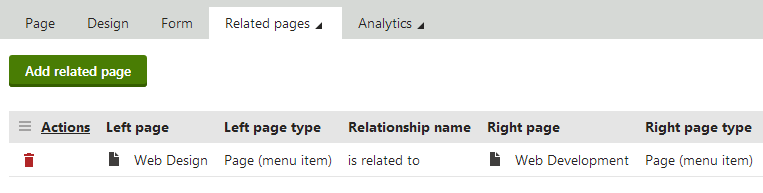
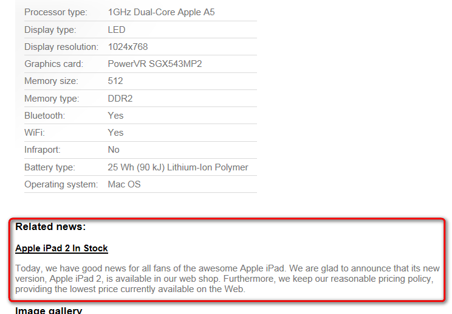

Displaying related pages using named relationships
You can add relationships between pages in your website's content tree. Page relationships allow you to:
Display related pages on pages using listing web parts or controls
Work with connections between pages in your custom logic (API)
Defining page relationship types
Before you can connect pages through relationships, you need to set up the relationship types (names) in the system. You can add any number of different relationship types.
Open the Relationship names application.
Click New relationship name.
Type a Display name for the relationship type.
Set the Type to Pages.
Click Save.
Switch to the Sites tab and add all sites where you wish to use the relationship.
You can now create relationships of the given type between pages.
Creating relationships between pages
To connect two pages through a relationship:
Open the Pages application.
Select one of the pages in the content tree.
Switch to the Properties -> Related pages tab.
Click Add related pages.
Choose the Relationship name (type).
Select the other related page on the right side of the relationship (type the alias path or click Select page).
Click Save.
The two pages are now related. The relationships are not symmetric – each relationship has one of the pages on the left side and the other on the right. You can add any number of relationships to pages.
Creating and removing relationships between pages is not a versioned operation. That is, changes to the relationships are immediately reflected on the published version of the pages.
Copying pages does not transfer page relationships. The new copy is considered as a separate page from the original. You can manually add the same relationships (or different ones) as required.

Adding relationships between pages
Displaying related pages using web parts
On portal engine pages, you can display related pages using listing web parts. Web parts that support relationships have the following properties available in the Relationships category:
|
Page relationship properties (Web parts) |
Description |
|
Main page |
Allows you to configure the web part to display only related pages:
|
|
Main page is on the left side |
Determines whether the specified page (Main page) is on the left or right side of the relationship.
|
|
Relationship name |
The web part uses the selected page relationship type. |
Note: The relationship properties do not ensure that web parts load all pages belonging to the specified relationship — they only filter the source data. You still need to set the remaining data source properties to load the required pages (such as the Path).
Example
The following example shows how to display news items related to a product using the Repeater web part. The example assumes you are using the sample Corporate site.
Open the Pages application and select the sample Corporate site.
Select the /Products/Laptops-and-Tables/Apple iPad2 page and add a relationship (is related to) with the /News/Apple-iPad2-In-Stock page.
Switch to Apple iPad2 page's Design tab and add a Repeater web part to Main zone.
Configure the following properties for the Repeater:
Path: /% (displays related news items from the whole website)
Page types: CMS.News
Transformation: CMS.News.Preview
Relationships -> Main page: Display pages related to the current page
Relationships -> Main page is on the left side: yes (checked)
Relationships -> Relationship name: is related to
HTML Envelope -> Content before: <h3>Related news:</h3>
Save & Close.
The page now displays a preview of the news items related to the product.

Repeater web part displaying a preview of news pages related to a product
Displaying pages using controls
Use controls to display related pages on ASPX page templates or in the code of custom components. The following controls support displaying of related pages:
The following properties allow you to filter the pages loaded by the controls according to relationships:
|
Page relationship properties |
Description |
Sample value |
|
RelationshipWithNodeGUID |
If set, the control only loads pages that are related to the page with the specified NodeGUID. You can find the Node GUID of pages on the Properties -> General tab in the Pages application. Enter "11111111-1111-1111-1111-111111111111" to dynamically load pages related to the current page. |
"36f8c4bc-f702-4736-8a25-a82295668794" |
|
RelatedNodeIsOnTheLeftSide |
Determines whether the page specified through the RelationshipWithNodeGUID property is on the left or right side of the relationship.
|
|
|
RelationshipName |
Specifies the type of the page relationship. Enter the code name of the relationship. |
"isrelatedto" |
Example
The following example shows how to display related news pages on pages that use ASPX page templates. The example assumes you are using the sample Corporate site.
Create a new web form in your web project as an ASPX page template.
Select the default CMSTemplates/CorporateSite/root.master file as the web form's master page.
In Visual Studio, drag the CMSRepeater control from the toolbox onto the page template's form.
Set the following properties for the CMSRepeater control:
Path: /%
ClassNames: CMS.News
TransformationName: cms.news.preview
RelationshipName: isrelatedto
RelationShipWithNodeGUID: 11111111-1111-1111-1111-111111111111
<cms:CMSRepeater ID="CMSRepeater1"runat="server"ClassNames="CMS.News"Path="/%"TransformationName="cms.news.preview"RelationshipName="isrelatedto"RelationshipWithNodeGUID="11111111-1111-1111-1111-111111111111"/>Save the web form.
Register the web form as an ASPX page template in the Page templates application.
Open the Pages application and create a page based on the ASPX template.
Add relationships (is related to) between the new page and news pages on the website.
The page displays a preview of the news items related to the page.